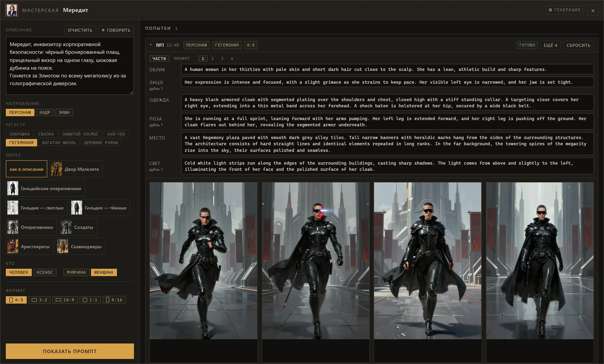
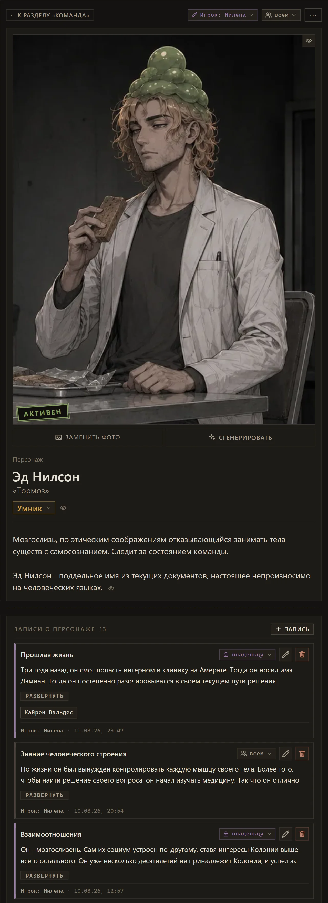
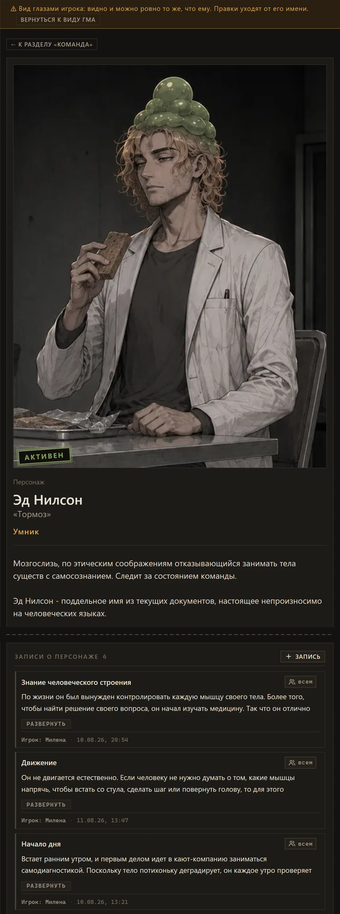
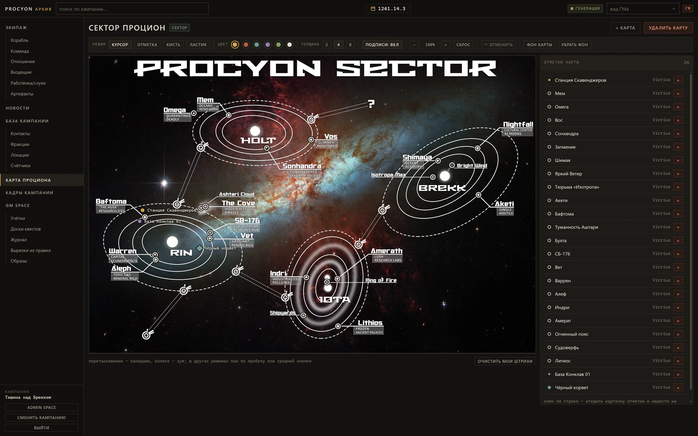
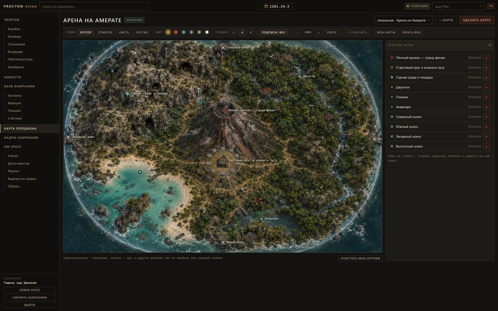
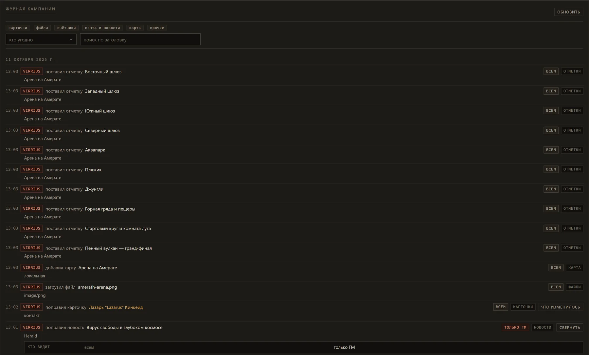
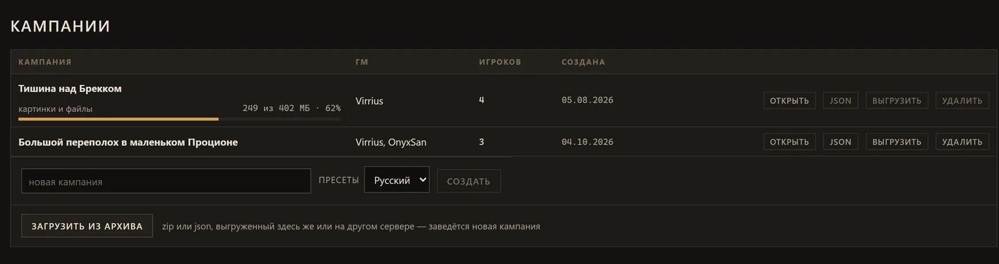

Инструменты ГМ для Scum and Villainy
ProcyonArchive
Рабочее место ГМа для «Изгоев Галактики», которое живёт на вашем сервере. Дела готовятся на досках квестов, к ним добавляются картинки, письма, карты и новости. Игроки видят ровно то, что им положено.


Все картинки и скриншоты на этой странице взяты из настоящей кампании.
Файл 01 — Интерфейс
Что внутри
Файл 02 — Бланки
Бланки корабля и персонажей
От автора
Кроме того, я регулярно забывал, что там на чаршите корабля, и искал его для игроков, чтобы они могли раскидать улучшения между партиями. Теперь он тоже здесь, и его удобно редактировать с телефона.
Теперь бланк есть и у персонажей. «Бланк» собирает на одном экране стресс, травмы, раны, нагрузку, креды, навыки, способности и снаряжение, а в шапке держит памятку по правилам с пояснениями по клику. «Настройка» проводит через создание и развитие, «Досье» показывает того же персонажа личным делом Управления дознания.
Файл 03 — Мастерская
Генерация картинок
Мастерская отдаёт описание персонажа языковой модели, и та пишет промпт картинки по частям: облик, лицо, одежда, поза, место и свет. ГМ выбирает направление, регистр, образ и формат и получает четыре варианта, каждый по своему дублю промпта.
Мередит что написал ГМ
Мередит, инквизитор корпоративной безопасности: чёрный бронированный плащ, прицельный визор на одном глазу, шоковая дубинка на поясе.
Гоняется за Элиотом по всему мегаполису из-за голографической диверсии.



Те же люди, другая одежда
Одежду фракции описывают один раз, и она садится на любого. Персонаж остаётся прежним, а одежда переходит из образа слово в слово.
Файл 04 — Пайплайн
Как делается картинка
Картинка проходит через две модели. LLM превращает пару слов ГМа в промпт под сеттинг, а небольшая модель рисует по нему картинку прямо на вашей видеокарте.
-
01
Промпт с оглядкой на сеттинг
LLM получает слова ГМа вместе с сеттингом: мир, выбранный регистр, одежду фракции. По ним она расписывает картинку по частям в четырёх дублях: облик, лицо, одежда, поза, место, свет.
-
02
Сборка кодом
Код добавляет стиль и кадрирование и исправляет то, на чём спотыкается небольшая модель: вещи из нашего века, парящую технику, планеты, похожие на Землю.
-
03
Картинка на своей видеокарте
Z-Image-Turbo (INT8) в ComfyUI: восемь шагов, около 15 секунд на картинку на одной видеокарте с 16 ГБ памяти. Или любой API для картинок.
От автора
Я прям упоролся, чтобы пайплайн генерации выдавал стиль сеттинга на крайне бюджетных моделях. Он настроен под Z-Image-Turbo, которая работает локально на одной видеокарте с 16 ГБ.
В моих экспериментах картинки иногда выглядят странновато или наивно, а корабли из-за сильной дистилляции ей совсем не даются. Но всегда можно подключить модель получше и подкрутить промпты в Admin space или просто загрузить картинки откуда угодно.
 заброшка
заброшка обжитой космос
обжитой космос хай-тек
хай-тек богатая жизнь
богатая жизнь древние руины
древние руиныОдин промпт,
четыре сида


Четыре дубля
от LLM


 до
до после
после до
до после
послеФайл 05 — Личные дела
Записи о персонажах
Игроки ведут записи о своих персонажах: прошлое, привычки, цели, секреты. Каждую запись можно открыть всему столу, показать выбранным игрокам или оставить между игроком и ГМом.


Файл 06 — Доступ
Кто что видит
Почти у всего в кампании есть круг тех, кто это видит: все, выбранные игроки, владелец с ГМом или только ГМ. Каждому игроку достаётся только то, что открыто ему, а ГМ может открыть любую страницу глазами игрока.
Файл 07 — Картография
Карты
Каждая кампания начинается с карты сектора Процион. ГМ может добавить карты систем или отдельных мест. Отметки ведут на карточки, а рисовать на карте может любой.


Файл 08 — GM space
Доски квестов
Для каждого сюжета у ГМа свой холст. На нём карточки, заметки, счётчики, картинки и наброски от руки, связанные нитями.
Файл 09 — Эфир
Новости
Новости и слухи пишутся на ходу. ГМ даёт одному из трёх журналистов сектора пару строк о событии или указывает на счётчик фракции и на причастных людей и места. Журналист подтягивает всё, что о них известно в кампании, и пишет своим голосом три депеши, каждую под своим углом. ГМ выпускает в эфир те, что подходят.
Что достанется игрокам, зависит от истории. Если событие публичное, под заголовком стоит суть, прямая зацепка: имя, место, за чем погнаться. Если нет, ГМ прячет суть, и игрокам остаётся только сама депеша: пристрастный и шумный гонзо-текст, где полезное зерно зарыто где-то внутри. Под каждой новостью жители сектора оставляют отклики.
От автора
Над некоторыми откликами я искренне угораю.
Файл 10 — API
Agent Friendly
Всё, что делает интерфейс, идёт через обычный HTTP API, и API сам себя объясняет. Вводная схемы подсказывает агенту, с чего начать (войти, прочитать /api/meta, получить список кампаний и участников), как устроены роли и видимость, где искать id и что значат коды ошибок. У каждой операции есть краткое описание, побочные эффекты и схемы запроса и ответа. Swagger лежит на /api/docs.
Безопасность стола держится на одном правиле: всё, что ГМ создаёт без указанной видимости, остаётся только для ГМа, и до игроков ничего не дойдёт, пока ГМ это не откроет. Это проверяли: два агента без доступа к коду, только по схеме, выполнили рутину ГМа. Завели контакт со слухом, связью и карточкой на доске, потом счётчик, письмо и новость. Случайных ошибок не было, к игрокам ничего не утекло.
У досок квестов свой API для агентов: выгрузить доску текстом, а потом разложить карточки, заметки, счётчики и нити одним вызовом. Правки карточек, записей, карт, новостей и писем попадают в журнал кампании: кто правил и что было до этого.
От автора
«Окей, Claude, напиши за меня квест. Сделай круто и красиво»«Окей, Claude. Прослушай мой бриф, потом закинь фракции и счётчики на доску из брифа, по моему описанию, заведи штук 10 статистов, сгенерь перса Bart Conwell, потом сгенерь зарисовок 20 под кампанию — выберем лучшие. И набросай справа штук 10 небольших small talks в группе исследований Марко»
POST /api/campaigns/{id}/boards/{board}/batch
{
"cards": [
{"key": "lazarus", "entity": "Lazarus Kincaid", "col": 0, "row": 0},
{"key": "tip", "text": "Имя детектива прозвучало в эфире"},
{"key": "hunt", "clock": "Детектив ищет Кайрена"}
],
"edges": [
{"from": "lazarus", "to": "tip", "label": "сливает"},
{"from": "tip", "to": "hunt", "style": "arrow"}
]
}

Файл 11 — Перенос
Перенос кампании
Кампания целиком уходит одним архивом: записи, заметки, часы, письма, новости, карты, доски, журнал и все картинки. Его можно перенести на другой сервер или держать как резервную копию. При загрузке заводится новая кампания: игроки с учётками на этом сервере сохраняют доступ, загрузивший становится ГМом.
